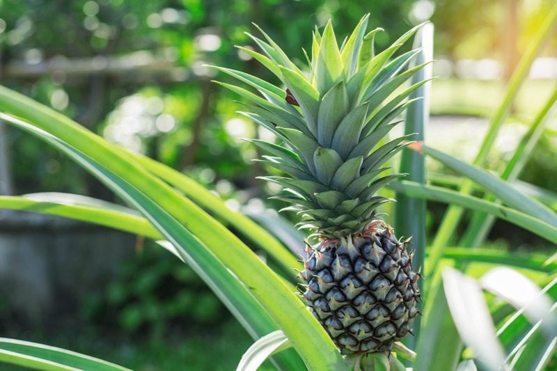
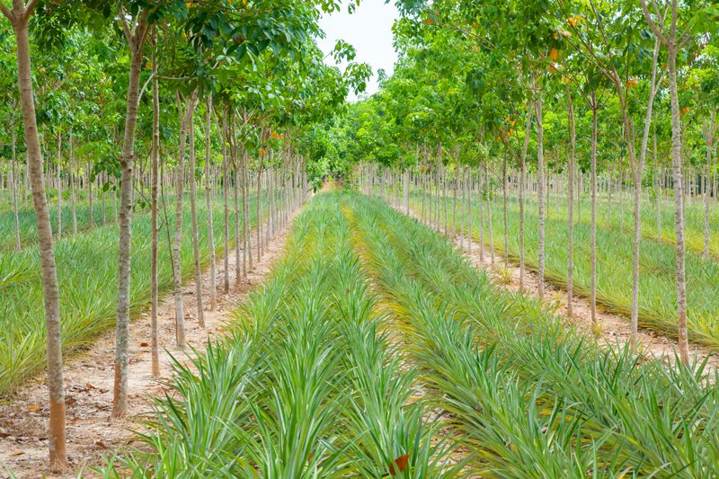
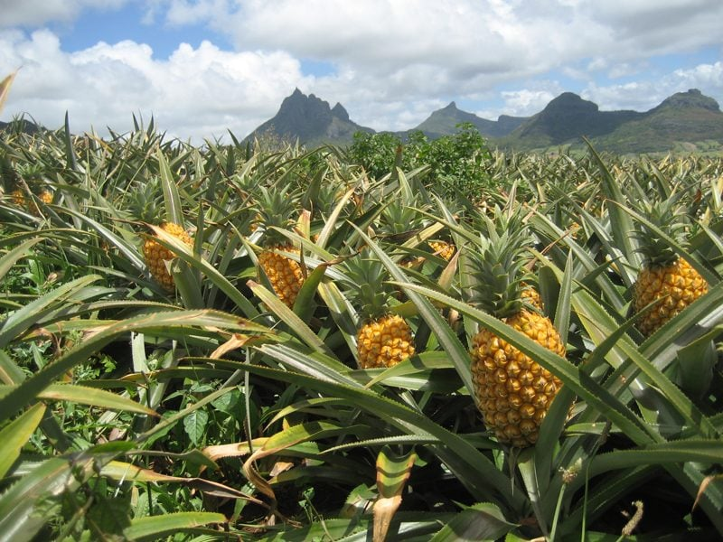
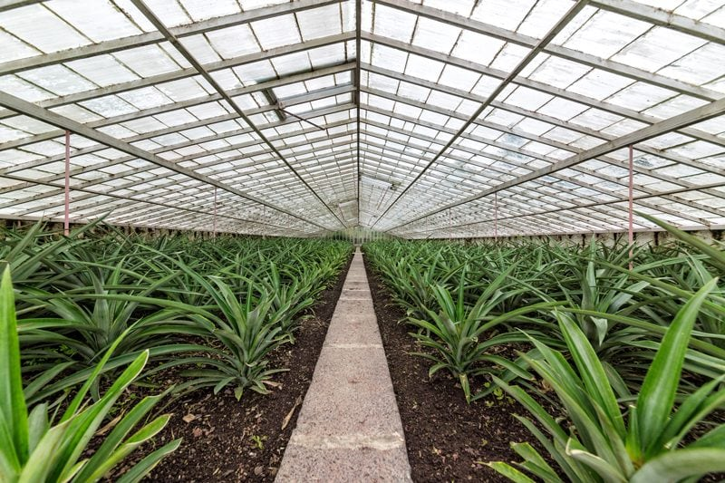
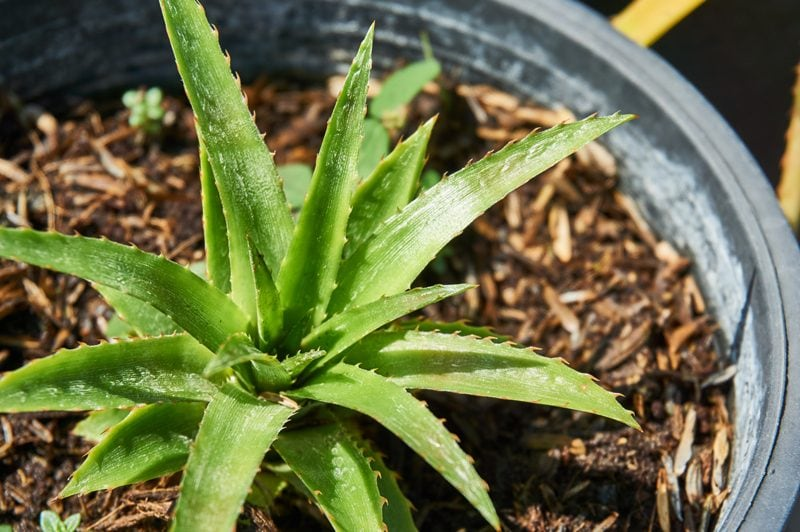

Pineapples – A Labor of Love
Pineapples are grown commercially in open-air fields, in temperature control greenhouses, and they can be grown in the yard in the dirt or in a pot. Raw pineapple can be a great source of manganese and vitamin C. Also bromelain is an enzyme that breaks down protein and is present in raw pineapple making the fruit useful as a digestive aid and an effective anti-inflammatory.

How are pineapples formed?
Pineapples don’t grow on a tree, in a bush, or on a vine… this exotic fruit actually comes from a flowering plant. Pineapple plants can grow to approximately six and a half feet tall and three feet wide. Interestingly, pineapple plants grow from the leafy tops of the fruit. Simply cut the crown off the top of the fruit and place it in the soil. Give it a lot of love and patience, and soon you will have a baby pineapple on your hands.
Once planted, the crown of the fruit forms roots and begins to grow new, leafy green foliage. The new plant will then start to flower small flowerets which will form in the middle of the foliage and rise. At first, the flowerets have red and pink tones before finally turning yellow once ripe. One pineapple is made up of dozens of individual flowerets that grow together to form the entire fruit. Each scale is evidence of a separate flower. Pineapple plants are best suited to hot climates and cultivation in pots as they do not have a large root system and need a free drainage system.

Appreciate the Labor of Harvesting…
The conditions for those who grow and work the pineapple fields can be incredibly difficult. Pineapple plants are spiky and difficult to handle, they grow low to the ground requiring workers to stoop over the plants, and the monoculture (cultivation of a single crop) production method requires that there is no shade over the plants. Therefore, workers have no respite from the suffocating heat of the day. The majority of large-scale plantations are in operation for 24 hours a day.
The types of tasks, in both the field and the packing houses, involve using heavy machinery and carrying out repetitive tasks that put a lot of strain on the body (i.e., constant bending over to plant seeds, weed, and harvest the pineapples). Some companies are, however, introducing mechanized harvesting which goes some way to reduce the strain on workers.
By the eighteenth month, the pineapples are typically harvested with a long knife (parang) and placed into a basket carried on the back of the harvester. The workers walk through the pineapple rows, dressed in thick gloves and clothing to protect them from the spiky bromeliad leaves. When the peduncle is cut during harvesting, about 3-5 cm of it is left attached to the fruit. It is important to harvest and handle the fruit carefully since any injury can affect the fruit quality and shorten the storage life. Pineapple is a non-climacteric fruit which does not improve in quality including sugar accumulation and flavor once they are harvested.

In large-scale pineapple production, the harvested fruits are deposited in drawers and transported to the packing plant as soon as possible. At the packing house, pineapples are first cleaned of dirt, insects, and any other foreign matter using blowers or brushes. The slips are removed, and the peduncles are cut with a sharp knife to a length not exceeding 2 cm. The fruits are cleaned through washing and then submerged in disinfectant in trays as the fruits have to be dried before packing. Another alternative process consists of submerging the fruits completely in a similar solution (with Triadimefon), this process is used especially to export to the United States and Europe.
After all that intensive labor, each pineapple undergoes great scrutiny. Here are some of the requirements before they are boxed and shipped to your local grocery store.
- Whole, with or without the crown.
- Fresh in appearance, including the crown, when present, which should be free of dead or dried leaves.
- Sound, produce affected by rotting or deterioration such as to make it unfit for consumption is excluded.
- Clean, practically free of any visible foreign matter.
- Free of internal browning.
- Practically free of pests affecting the general appearance of the produce.
- Practically free of damage caused by pests.
- Free of pronounced blemishes.
- Free of damage caused by low and/or high temperature.
- Free of abnormal external moisture, excluding condensation following removal from cold storage.
- Free of any foreign smell and/or taste.

Shipping & Transportation
- The cleaned pineapples are packed upright in clean plastic boxes with holes on all sides for ventilation to allow a quick exit of the heat of the fruit.
- Pineapples require particular temperature, humidity/moisture, and ventilation conditions when being transported to their destination. A constant supply of tempered fresh air helps to remove the ripening gases arising and to keep the CO2 content of the hold air low. Spoilage may occur as a result both of inadequate ventilation (danger of rotting) and of excessive ventilation (drying-out, weight loss). (1)
- The pallets of boxed pineapples are properly maintained in refrigerated shipping containers. Each container has a capacity of holding 1500 – 3000 boxes of pineapples. The refrigerated container is maintained at 7.5 – 8° C prior to export. Each container has a thermograph for the control and registration of the temperature while traveling as well as with the respective filters for the control of the ethylene.
- At this point, they are shipped all over and end up at your local grocery store.
Can I Grow them Myself?
The answer is yes. The pineapple plant is one of the few tropical fruits that are really well suited to growing in pots, and that means you can grow pineapples indoors.
- Pineapples don’t require much water. They have very tough leaves so they don’t lose much water through evaporation.
- Pineapples don’t need much soil since they do not have a big root system.
- Pineapples get a lot of their water and nutrition through their leaves.
- Pineapples like slightly acidic soils, which is what most gardens have anyway.
- Pineapples grow in full sun, even in the hottest climates, but they also do well in the shade.
- Pineapples grow very happily in pots or tubs.

How to Grow a Pineapple at Home
- Buy a nice looking pineapple. Make sure it’s nice and ripe.
- Rinse the fruit off, place it on its side on a cutting board, cut off the leafy top part of the pineapple, along with an inch or two of the pineapple’s meat.
- Place it in a dry, dark place for a full week to allow the end to harden.
- If you live in a warmer climate, you can plant your pineapple directly into the ground. If your winter weather is any worse than the occasional freeze, plant your pineapple in a pot where you can take it inside.
- Select a spot or pot, make sure it has room. The plants grow to about five to six feet across and get spiny leaves, so take that into consideration when deciding where you plant your pineapple. The plant cannot stand waterlogging, so just make sure wherever it is planted that the soil drains well.
- Once you have a location selected to plant the pineapple, it’s time to dig the hole.
- The hole only needs to be deep enough to cover the fruit still attached to the pineapple’s leaves.
- Place the pineapple in the hole, and cover with dirt, leaving the pineapple leaves exposed above ground.
- This applies to potted pineapple plants as well.
- Water the plant.
- If you are growing your pineapple in the ground, you can basically forget about it for a while. Pineapples are very much maintenance free plants.
- If you are growing your pineapple in a pot where you bring the plant inside during colder weather, I would definitely water the pineapple more often.
- Pineapple plants grow slowly; it can take 2-3 years for your plant to start producing fruit.
- When it starts producing the pineapple, don’t rush it, let your pineapples get ripe on the plant.
- When the outside skin starts changing from brown to yellow, use a saw to cut through the stalk supporting the pineapple.
- Enjoy!
© AmieSue.com